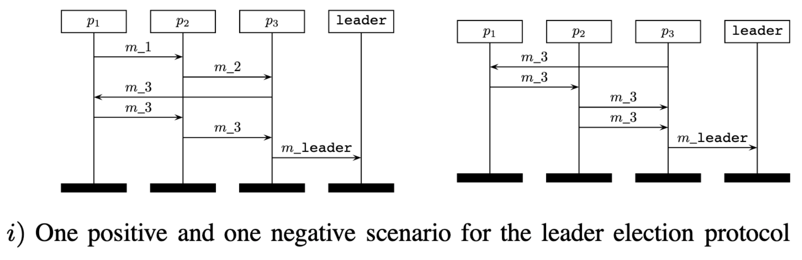

Message Sequence Charts

"A Message Sequence Chart... describes the message flow between instances. One Message Sequence Chart describes a partial behaviour of a system."
Intuitive way to keep track of messages.
Bollig et al. 2010; International Telecommunication Union (ITU) Recommendation Z.120